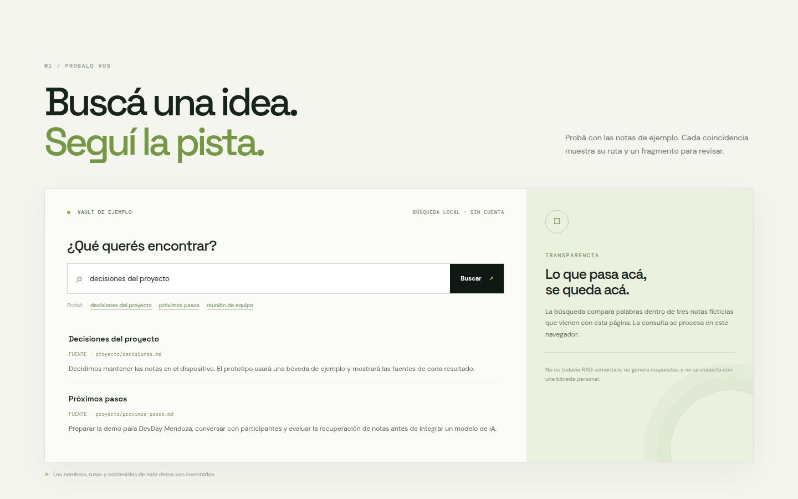
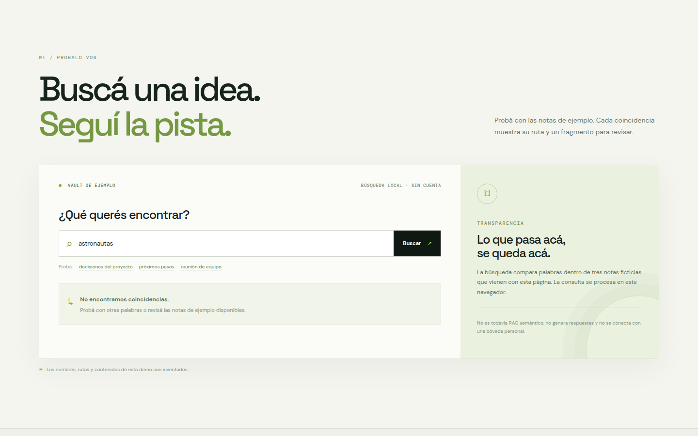

ANTES DE UNA REUNIÓN
Retomar acuerdos
Reuní decisiones previas y pendientes sin releer todo el historial.
“¿Qué habíamos acordado y quién sigue?”
DEV DAY EXCHANGE · MENDOZA / PROTOTIPO ABIERTO
La propuesta: conectar tu bóveda personal, buscar con fuentes y sumar un agente que pida permiso antes de compartir.
“Mantener las notas en el dispositivo y mostrar la fuente de cada resultado.”
El prototipo es transparente sobre lo que hace hoy.
01 / PROBALO VOS
Probá con las notas de ejemplo. Cada coincidencia muestra su ruta y un fragmento para revisar.
Vas a ver el fragmento y el archivo de origen para poder comprobar el contexto.
✳ Los nombres, rutas y contenidos de esta demo son inventados.
02 / ASÍ SE VE
Capturas reales de esta demo, realizadas con el vault de ejemplo. No contienen información personal.


03 / PARA QUÉ PODRÍA SERVIR
Escenarios de ejemplo para una futura integración con notas propias y respuestas con citas.
ANTES DE UNA REUNIÓN
Reuní decisiones previas y pendientes sin releer todo el historial.
AL VOLVER A UN PROYECTO
Conectá una nota de planificación con el último avance y su contexto.
AL INVESTIGAR UN PROBLEMA
Buscá soluciones anteriores y consultá las fuentes antes de actuar.
NOTA Estos casos son ideas de producto; esta web todavía no accede a notas reales ni responde con un modelo.
04 / EL DISEÑO PROPUESTO
Componentes separados para que la sincronización, la búsqueda y el uso de un modelo puedan revisarse por partes.
Archivos Markdown
en tus dispositivos
Sincronización
entre dispositivos
Recuperación
de fragmentos
Respuesta con citas
y control de envío
Estado actual: esta cadena es una arquitectura propuesta. El servidor ovaultd 0.3.3 está desplegado por separado; la web de búsqueda no está conectada a él, a obsn ni a un modelo.
Leer el diseño ↗UN PROTOTIPO ABIERTO DESDE MENDOZA
Una idea para conversar, probar y mejorar en comunidad. El código y la documentación están abiertos.